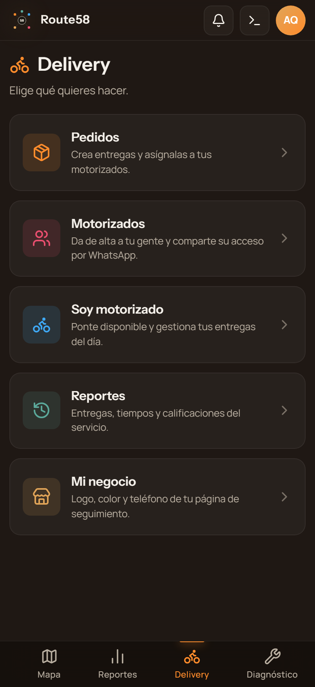

Vista previa — avances y bocetos
Aquí publicamos lo que vamos mostrando al equipo y a los colaboradores: cómo va cada producto y las propuestas de diseño en las que estamos trabajando. Entra a cada tarjeta para verlo.
● Material interno · en construcción
Módulo de Delivery
Cómo va el módulo de reparto, con pantallas reales del entorno de pruebas: alta de repartidores, panel del negocio, vista del repartidor y todo sobre el mapa.
Boceto de la app
Cómo se verá la app en la 1.ª fase: dirección Volt Neón minimalista (logo 1 + verde neón), en móvil y escritorio.
 MOTRACK
MOTRACK
Conceptos de logo
6 propuestas de identidad para el nuevo producto de motos (verde fluorescente + negro). Para elegir cuál usar o qué mezclar.
Tablero de marca
Paleta, tipografía, tono y un preview de cómo se vería la app Motrack (skin sobre el mismo sistema Route58).
Diseños de la web
4 direcciones distintas de cómo se vería la app completa (botones, tarjetas, datos) — cada una con sus propias tipografías. Para comparar el "aire".
Material para las piezas (Nautinatios)
Capturas base de las funcionalidades para los 2 canales de venta (delivery y arrendadores/seguridad) + comparación Motrack vs. celular.